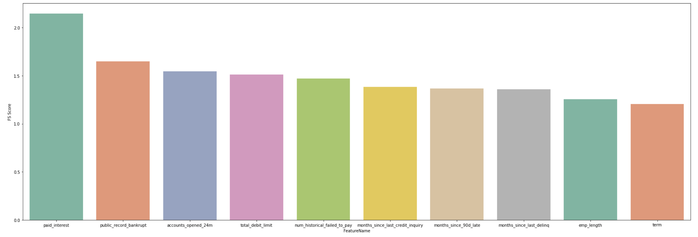

Interest Rate Predictions
In this part, I will be showing two different algorithms that attempt to predict the interest rate based on a data input from the database provided. First of all, I would like to describe some of the insights I have gained from the previous exploratory data analytics. First of all, we have seen that grade and subgrade have a direct effect on the interest rate with the interest rate on the loan offered being given to the loanee based on the grade they have been given. Moreover, if we look at the Lending Club website we see that the interest rate for a loanee is directly based on the sub-grade with the interest rate being equal to the base IR (given based on what grade) plus the adjustment for risk and volatility (given based on the sub grade). Second of all, we can see from the other graphs above, many of the categorical information such as state has too many unique values and would definitely overload any model we decide to use. Hence, we would need to select which factors to use in the model and this means we would need feature importance analysis for both numerical and categorical values.
Data Cleaning and Feature Importance
The first step I did was to get rid of all of the columns that had a huge number of null values, as using these factors to do our modelling would create incosistencies due to the lack of information for that factor and we would be overfitting by forcing the model to use data from that factor. The second step was to deal with the columns that had a small number of null values and for numerical columns I dealt with this by finding the mean of the column data and placing that into all entries with null values for that column. For categorical columns, this was more challenging and due to the time constraint I had to leave those columns out of the data model. The third step was to deal with the valid categorical column that had a entry for each row, and for this part I used pandas get_dummies function to turn each categorical column into a numerical column by splitting a column with n unique values into n columns with the entry having 1 in that column if it had that unique value and 0 if it did not. Last but not least, I had to do some basic feature importance analysis to be able to see which factors we would use in the model. Due to the categorical columns giving me inf or nan for the feature importance score, I only looked at numerical columns for the feature importance analysis I have shown below. As seen below, the analysis showed that the three most important features were paid interest, public record bankrupt and account opened 24m.
